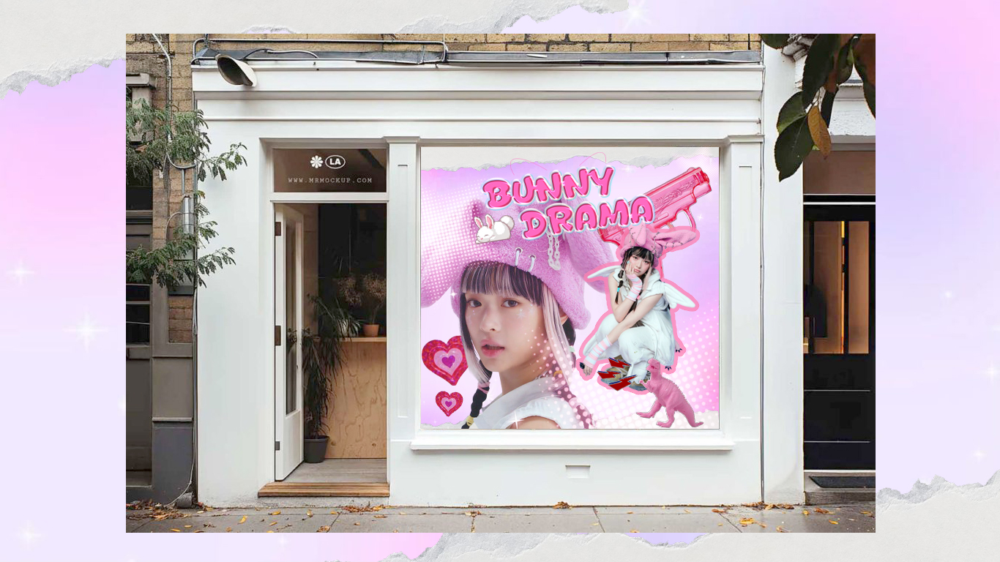
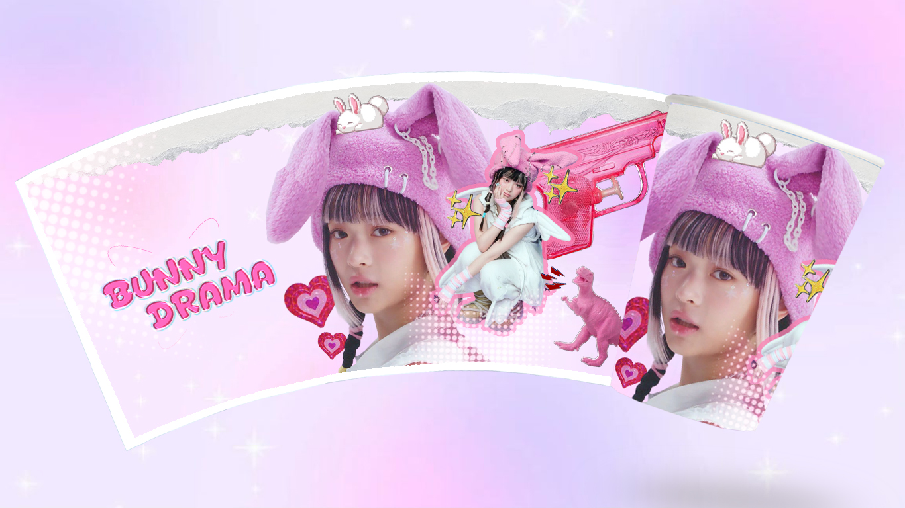
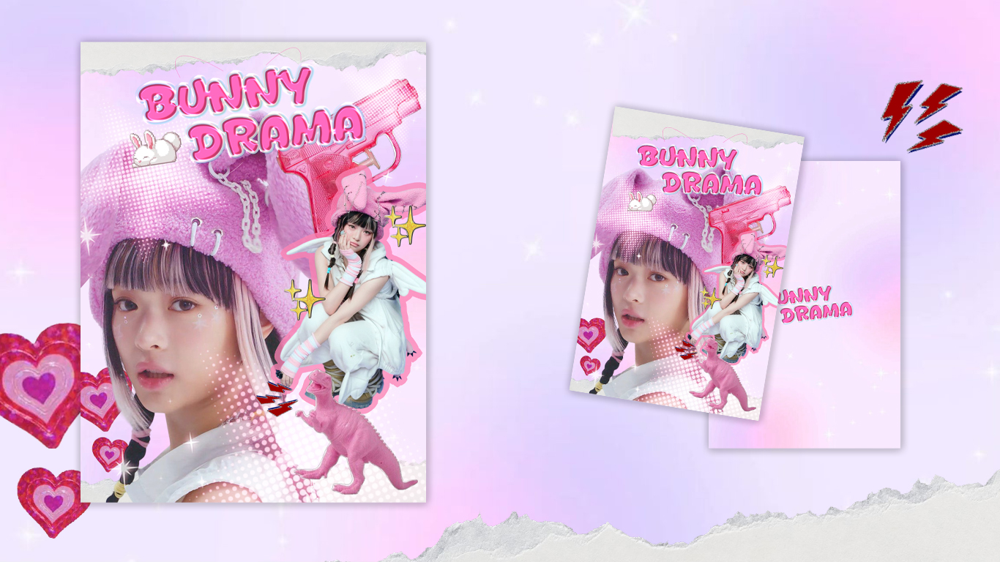
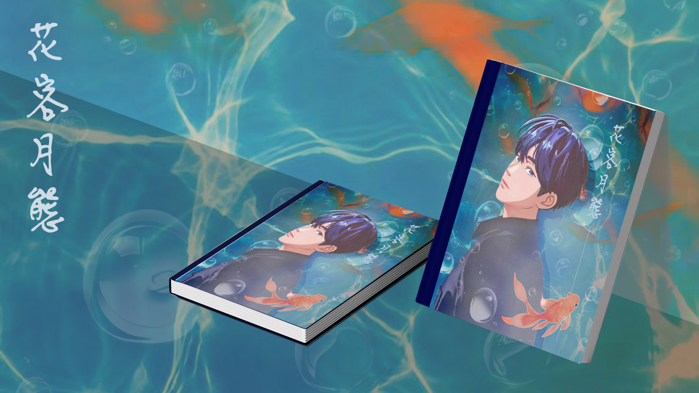
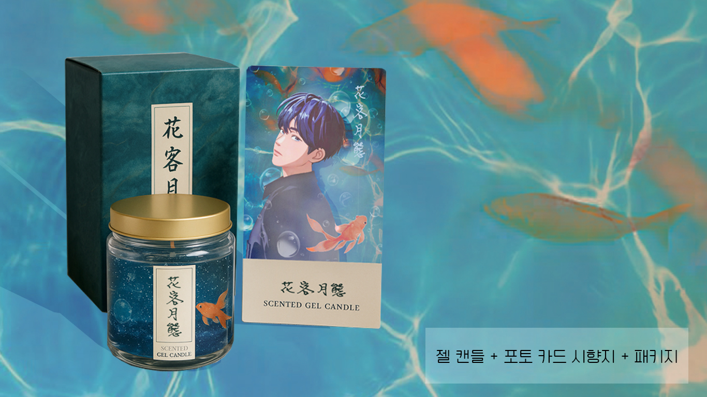
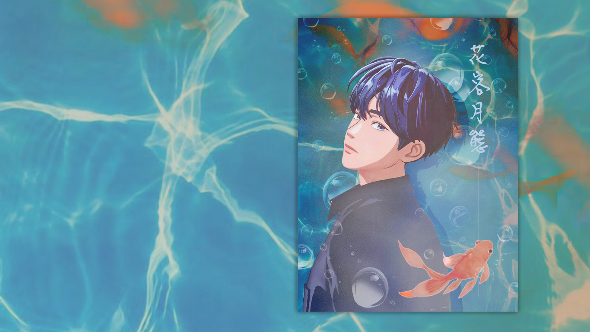
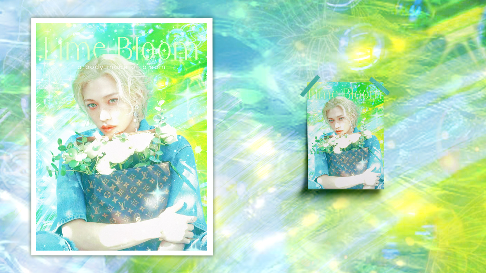
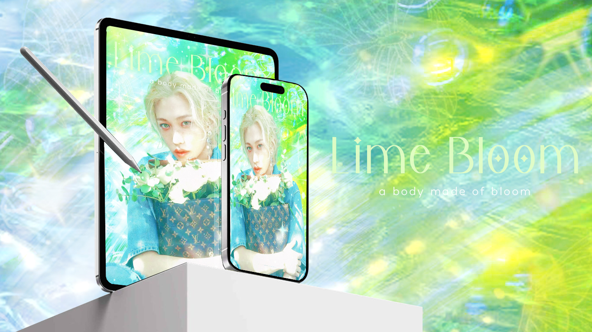

BUNNY DRAMA
하니의 감정이 폭발하는 순간, 핑크로 번지는 키치 드라마

실제 이벤트 현장을 상상하며 제작된 윈도우 배너 목업


🌈 프로젝트 요약
- 키워드: 🐰 Bunny / 💗 Pink Drama / ✨ Y2K / 🎀 Cute & Edgy
- 목적: 아이돌 '하니'의 생일을 기념한 팬메이드 굿즈 디자인
- 컨셉: Y2K + 키치 + 러블리 감성의 드라마틱 연출
- 활용: 생일카페 / 굿즈 패키징 / SNS 콘텐츠용
- 툴: Adobe Photoshop | 기간: 약 1일
“이 디자인은 단순한 귀여움이 아닌, 팬의 감정을 시각 언어로 풀어내는 실험이었습니다.”
花客月饌
정적인 수면 위, 감정을 담은 팬메이드 굿즈 시리즈


젤캔들 + 시향카드 + 전용 박스로 구성된 굿즈 세트

🌈 프로젝트 요약
- 키워드: 🌕 달빛 / 🐟 금붕어 / 💧 수면 / ✨ 감성 일러스트 / 🍃 청량 & 정적
- 목적: 아티스트의 분위기에 어울리는 팬메이드 굿즈 디자인 및 패키징
- 컨셉: 수중 테마 + 서정적 일러스트 + 몽환적 연출
- 활용: 팬북 / 시향지 / 젤캔들 굿즈 / 전시 연출 키트
- 툴: Adobe Photoshop, Illustrator | 기간: 약 2~3일
“이 디자인은 감정을 시각으로 번역하는 섬세한 시도였습니다.
花客月饌은 그저 굿즈가 아닌, 감정을 담은 선물입니다.”
Lime Bloom
a body made of bloom – 빛과 생명이 피어나는 감정의 순간


디지털 굿즈로도 활용 가능한 감성 배경화면 시리즈
🌈 프로젝트 요약
- 키워드: 🌿 Bloom / 💫 Glow / ✨ Ethereal / 📱 Digital + Paper / 🧼 Light Fantasy
- 목적: 인물의 분위기와 라이트 판타지 감성을 결합한 포스터 디자인
- 컨셉: 빛 + 생명감 + 정적의 흐름이 어우러진 감성 일러스트
- 활용: 아트포스터 / 배경화면 / 전시용 디지털 콘텐츠 / 엽서
- 툴: Adobe Photoshop | 기간: 약 1일
“Lime Bloom은 몸이 아니라 감정이 피어나는 순간을 시각화한 작업입니다.”
BUNNY DRAMA
하니의 감정이 폭발하는 순간, 핑크로 번지는 키치한 굿즈 프로젝트
花客月饌
정적인 수면과 몽환적인 테마로 구성된 서정적 굿즈 세트
Lime Bloom
감정이 피어나는 순간을 시각화한 감성 아트워크와 디지털 콘텐츠